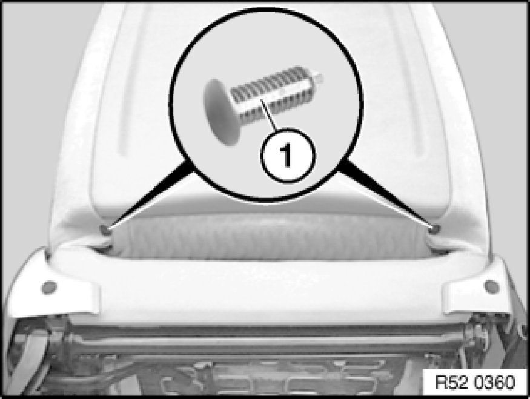

Removing and Installing/Replacing Rear Panel on Left or Right Front Seat Backrest (Normal/Manual).
52 13 198 - Removing and installing / replacing rear panel on left or right front seat backrest (normal/manual)
Remove front seat. Front Seat, Normal, Manual

Release clips (1) with side cutting pliers.
Note:
Remove clip remainders.
Carefully pull cover (1) with piping (2) out of groove in rear panel (3).
Installation:
The cover piping (1) has a marking (2) which must line up with hole (3) in rear panel groove (4).
From marking (2), press in piping (1) completely to left and right at bottom.
Five new repair clips must be fitted after each disassembly.
Release clips (1) (cut through with side cutting pliers).
Note:
Remove clip remainders.
Pull rear panel (1) off backrest cover (2).
Installation:
Holes (1) and (2) on rear panel (3) must not be damaged.
Installation:
Slide backrest cover (1) on left/right over clip mount (2).
Installation:
To prevent noise:
Stick felt strip (1) to raised frame area (2).